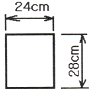
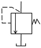
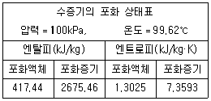
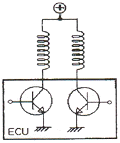
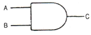

자동차정비기사 (2012-05-20 기출문제)
1과목: 일반기계공학
1. 유압장치에서 오일의 점도가 너무 낮을 때 나타날 수 있는 현상은?
- 오일 누설이 증가한다.
- 마찰 저항에 의하여 높은 온도를 유발한다.
- 마찰 손실에 의하여 동력 소모가 증가한다.
- 높은 유동저항으로 응답성이 저하된다.
(정답률: 73%)

2. 미터 보통나사의 나사산의 각도는 얼마인가?
- 55°
- 60°
- 30°
- 45°
(정답률: 74%)
3. 폭이 24㎝이고 높이가 28㎝인 직사각형 단면의 가로방향 중심축에 대한 단면계수 Z값은?

- 32256㎝4
- 43904㎝4
- 2688㎝3
- 3136㎝3
(정답률: 19%)
4. 코일스프링에서 코일의 평균지름을 D, 소선의 지름을 d, 스프링 권수를 n, 스프링에 작용하는 하중을 P, 선재의 전단탄성계수를 G라 하면 스프링 처짐량 σ를 구하는 식으로 옳은 것은?
- σ = (64PD2n)/(Gd3)
- σ = (32PD2n)/(Gd3)
- σ = (16PD3n)/(Gd4)
- σ = (8PD3n)/(Gd4)
(정답률: 57%)
5. 다음 중 베어링 메탈로서 가장 많이 사용되는 것은?
- 침탄강
- 화이트 메탈
- Ni-Cr강
- 구상흑연 주철
(정답률: 80%)
6. 황동과 청동은 구리에 각각 무엇을 첨가한 합금인가?
- 황동 : Zn, 청동 : Ni
- 황동 : Zn, 청동 : Sn
- 황동 : Ni, 청동 : Sn
- 황동 : Sn, 청동 : Pb
(정답률: 79%)
7. 다음 공유압 기호의 명칭으로 옳은 것은?

- 감압 밸브
- 릴리프 밸브
- 셔틀 밸브
- 체크 밸브
(정답률: 69%)
8. 다음 중 프레스 가공의 특징에 관한 설명으로 틀린 것은?
- 균일한 제품으로 만들기 쉽다.
- 다품종 소량 생산에 적합하다.
- 재료를 경제적으로 사용할 수 있다.
- 생산성이 높은 가공법에 속한다.
(정답률: 79%)
9. 축간거리 500㎜, 원동 풀리와 종동 풀리의 유효지름이 각각 300㎜인 평벨트 전동장치에서 바로걸기로 벨트연결을 하였다면 필요한 벨트의 길이는 약 몇 ㎜인가?
- 1328
- 1681
- 1813
- 1942
(정답률: 46%)
10. 유효지름 38㎜, 피치 8㎜, 접촉부 마찰계수가 0.1인 1줄 사각나사의 효율은 약 몇 %인가?
- 21.4
- 27.7
- 39.8
- 44.2
(정답률: 37%)
11. 다음 기어 중 맞물리는 기어의 두 축이 서로 만나지도 않고, 평행하지도 않는 기어로서 큰 감속비를 필요로 할 때 주로 사용하는 것은?
- 스퍼 기어
- 베벨 기어
- 헬리컬 기어
- 웜 기어
(정답률: 56%)
12. 유압용 개스킷이 갖추어야 할 조건과 가장 관계가 적은 것은?
- 마찰계수가 적을 것
- 충분한 강도를 가질 것
- 유체에 의해 변질되지 않을 것
- 유연성을 유지할 것
(정답률: 61%)
13. 다음 수작업 공구 중 암나사를 내는 공구인 것은?
- 플라이어(plier)
- 탭(tap)
- 다이스(dies)
- 정(chisel)
(정답률: 79%)
14. 벨트의 한쪽 면에 미끄럼 방지를 위한 치형이 붙어 있어 슬립이 거의 발생하지 않고 속도 변화가 아주 적어 벨트전동과 체인전동의 중간적인 특성을 가지고 있는 벨트는?
- V-벨트
- 가죽벨트
- 평벨트
- 타이밍벨트
(정답률: 72%)
15. 다음 중 유연성 커플링(flexible coupling)에 속하는 것은?
- 올덤 커플링
- 플랜지 커플링
- 머프 커플링
- 다이어프램 커플링
(정답률: 64%)
16. 다음 중 재료기호가 밀도가 작은 것부터 큰 것의 순서대로 올바르게 나열된 것은?
- Fe＜Cu＜Pb
- Cu＜Mg＜Pb
- Mg＜Pb＜Fe
- Fe＜Pb＜Mg
(정답률: 63%)
17. 다음 중 주물에 사용되는 주물사의 구비 조건으로 틀린 것은?
- 화학적 변화가 없고, 내화성이 커야 한다.
- 성형성과 통기성이 커야 한다.
- 열전달이 잘 이루어져야 한다.
- 주물표면에서 이탈이 잘 이루어져야 한다.
(정답률: 62%)
18. 숫돌차의 바깥지름이 300㎜, 회전수 1500rpm인 연삭숫돌에서 고정된 가공물을 연삭할 때 연삭 속도는 약 몇 m/min인가?
- 1294
- 1324
- 1414
- 1533
(정답률: 43%)
19. 비틀림 각이 30°인 헬리컬 기어에서 잇수가 50, 이직각 모듈이 4일 때 바깥지름은 약 몇 ㎜인가?
- 184
- 239
- 208
- 264
(정답률: 24%)
20. 단순보의 정 중앙에 집중하중이 작용할 때 이 보의 최대처짐량에 대한 설명으로 틀린 것은?
- 지지점 사이의 거리의 3제곱에 반비례한다.
- 집중하중 크기에 비례한다.
- 단면2차 모멘트에 반비례한다.
- 세로탄성계수에 반비례한다.
(정답률: 56%)
2과목: 기계열역학
21. 랭킨사이클(Rankine cycle)에 관한 설명 중 틀린 것은?
- 보일러에서 수증기를 과열하면 열효율이 증가한다.
- 응축기 압력이 낮아지면 열효율이 증가한다.
- 보일러에서 수증기를 과열하면 터빈 출구에서 건도가 감소한다.
- 응축기 압력이 낮아지면 터빈 날개가 부식될 가능성이 높아진다.
(정답률: 52%)
22. 증기를 가역 단열과정을 거쳐 팽창시키면 증기의 엔트로피는?
- 증가한다.
- 감소한다.
- 변하지 않는다.
- 경우에 따라 증가도 하고, 감소도 한다.
(정답률: 55%)
23. 초기 온도와 압력이 50℃, 600kPa인 질소가 100kPa까지 가역 단열 팽창하였다. 이때 온도는 약 몇 K인가? (단, 비열비 k＝1.4이다.)
- 194
- 294
- 467
- 539
(정답률: 35%)
24. 카르노사이클로 작동되는 열기관이 600K에서 800kJ의 열을 받아 300K에서 방출한다면 일은 약 몇 kJ인가?
- 200
- 400
- 500
- 900
(정답률: 69%)
25. 523℃의 고열원으로부터 1MW의 열을 받아서 300K의 대기로 600kW의 열을 방출하는 열기관이 있다. 이 열기관의 효율은 약 몇 %인가?
- 40
- 45
- 60
- 65
(정답률: 48%)
26. 체적이 일정하고 단열된 용기 내에 80℃, 320kPa의 헬륨 2kg이 들어 있다. 용기 내에 있는 회전날개가 20W의 동력으로 30분 동안 회전한다. 최종 온도는? (단, 헬륨의 정적비열 (C v )＝3.12kJ/kg·K이다.)
- 76.2℃
- 80.3℃
- 82.9℃
- 85.8℃
(정답률: 58%)
27. 밀폐계(closed system)의 가역정압과정에서 열전달량은?
- 내부에너지의 변화와 같다.
- 엔탈피의 변화와 같다.
- 엔트로피의 변화와 같다.
- 일과 같다.
(정답률: 65%)
28. 열펌프를 난방에 이용하려 한다. 실내 온도는 18℃이고, 실외 온도는 -15℃이며 벽을 통한 열손실은 12kW이다. 열펌프를 구동하기 위해 필요한 최소 일률(동력)은?
- 0.65kW
- 0.74kW
- 1.36kW
- 1.53kW
(정답률: 65%)
29. 증기압축 냉동기에서 냉매가 순환되는 경로를 올바르게 나타낸 것은?
- 증발기→압축기→응축기→수액기→팽창밸브
- 증발기→응축기→수액기→팽창밸브→압축기
- 압축기→수액기→응축기→증발기→팽창밸브
- 압축기→증발기→팽창밸브→수액기→응축기
(정답률: 69%)
30. 압력 200kPa, 체적 0.4m3인 공기가 정압하에서 체적이 0.6m3로 팽창하였다. 이 팽창 중에 내부에너지가 100kJ만큼 증가하였으면 팽창에 필요한 열량은?
- 40kJ
- 60kJ
- 140kJ
- 160kJ
(정답률: 60%)
31. 대기압 하에서 물질의 질량이 같을 때 엔탈피의 변화가 가장 큰 경우는?
- 100℃ 물이 100℃ 수증기로 변화
- 100℃ 공기가 200℃ 공기로 변화
- 90℃의 물이 91℃ 물로 변화
- 80℃의 공기가 82℃ 공기로 변화
(정답률: 73%)
32. 압력 1000kPa, 온도 300℃ 상태의 수증기[엔탈피(h)＝3⑤1.15kJ/kg, 엔트로피(s)＝7.1228kJ/kg·K]가 증기 터빈으로 들어가서 100kPa 상태로 나온다. 터빈의 출력일은 370kJ/kg이다 수증기표를 이용하여 터빈 효율을 구하면 약 얼마인가?

- 0.156
- 0.332
- 0.668
- 0.798
(정답률: 48%)
33. 해수면 아래 20m에 있는 수중다이버에게 작용하는 절대압력은 약 얼마인가? (단, 대기압은 101kPa이고, 해수의 비중은 1.03이다.)
- 202kPa
- 303kPa
- 101kPa
- 504kPa
(정답률: 54%)
34. 난방용 열펌프가 저온 물체에서 1500kJ/h로 열을 흡수하여 고온 물체에 2100kJ/h로 방출한다. 이 열펌프의 성능계수는?
- 2.0
- 2.5
- 3.0
- 3.5
(정답률: 44%)
35. 어느 내연기관에서 피스톤의 흡기과정으로 실린더 속에 0.2kg의 기체가 들어왔다. 이것을 압축할 때 15kJ의 일이 필요하였고, 10kJ의 열을 방출하였다고 한다면, 이 기체 1kg당 내부에너지의 증가량은?
- 10kJ
- 25kJ
- 35kJ
- 50kJ
(정답률: 56%)
36. A, B 두 종류의 기체가 한 용기 안에서 박막으로 분리되어 있다. A의 체적은 0.1/m3, 질량은 2kg이고 B의 체적은 0.4/m3, 밀도는 1kg/m3이다. 박막이 파열되고 난 후에 평형에 도달하였을 때 기체 혼합물의 밀도는?
- 4.8kg/m3
- 6.0kg/m3
- 7.2kg/m3
- 8.4kg/m3
(정답률: 41%)
37. 실린더 내의 이상기체 1kg이 온도를 27℃로 일정하게 유지하면서 200kPa에서 100kPa 까지 팽창하였다. 기체가 한 일은? (단, 이 기체의 기체상수는 1kJ/kg·K이다.)
- 27kJ
- 208kJ
- 300kJ
- 433kJ
(정답률: 46%)
38. 출력이 50kW인 동력 기관이 한 시간에 13kg의 연료를 소모한다. 연료의 발열량이 45000kJ/kg이라면, 이 기관의 열효율은 약 얼마인가?
- 25%
- 28%
- 31%
- 36%
(정답률: 61%)
39. 정압비열 209.5J/kg·K이고, 정적비열 159.6J/kg·K인 이상기체의 기체상수는?
- 11.7J/kg·K
- 27.4J/kg·K
- 32.6J/kg·K
- 49.9J/kg·K
(정답률: 65%)
40. 어떤 발명가가 태양열 집열판에서 나오는 77℃의 온수에서 1kW의 열을 받아 동력을 생성하는 열기관을 고안하였다고 주장한다. 이러한 열기관이 생성할 수 있는 최대 출력은? (단, 주위 공기의 온도는 27℃라고 가정한다.)
- 1000W
- 649W
- 333W
- 143W
(정답률: 24%)
3과목: 자동차기관
41. 희박연소(Lean Burn) 엔진에 대한 설명 중 올바른 것은?
- 기존 엔진보다 연료사용을 적게 하기 위해 실린더로 들어가는 공기와 연료량을 모두 줄인다.
- 모든 운전영역에서 터보장치가 작동될 수 있는 기관이다.
- 실린더로 들어가는 공기량을 줄이기 위해 매니폴드 스로틀 밸브를 사용하기도 한다.
- 이론공연비보다 더 희박한 공연비 상태에서도 양호한 연소가 가능한 기관이다.
(정답률: 79%)
42. 디젤 기관에서 연료 분사의 필요조건을 설명한 것 중 틀린 것은?
- 무화 : 연료의 입자가 작을수록 가열되는 시간이 짧으며, 연소가 잘 되도록 연료입자를 미세화 한다.
- 관통력 : 연소가 시작됨에 따라 미세화 된 연료는 새로운 공기와 혼합하여 연소 가스 내로 들어가는 힘을 말한다.
- 분포 : 분사노즐로부터 분사되는 연료의 분사량을 말한다.
- 분산도 : 분산된 연료가 균일하게 연소실에 분포하였더라도 분사범위의 각 장소에서의 분무 중량 분포가 알맞지 않으면 완전한 혼합가스가 되지 못해 연소 시 불안정하고 열 손실이 증대될 수 있다.
(정답률: 73%)
43. 가솔린 기관의 노크 경감 대책으로 적합하지 않은 것은?
- 압축압력을 낮춘다.
- 냉각수 온도를 낮게 한다.
- 흡기온도를 낮게 한다.
- 연료의 착화지연 기간을 짧게 한다.
(정답률: 59%)
44. 기관의 흡입장치에서 흡입효율을 향상시키기 위한 방법으로 거리가 먼 것은?
- 과급 방법
- 밸브 개폐시기 제어 방법
- 흡기다기관의 길이 및 단면적을 고정하는 방법
- 배기장치의 배압감소 방법
(정답률: 64%)
45. 전자제어 가솔린 기관에서 시동이 걸리지 않는 원인으로 거리가 먼 것은?
- EGR 밸브의 열림
- 점화시기의 불량
- 타이밍벨트의 오장착
- 노크센서의 고장
(정답률: 62%)
46. 디젤 기관에서 과급할 경우의 장점이 아닌 것은?
- 충진효율이 상승한다.
- 연료소비율(g/kW)이 낮아진다.
- 배기소음이 증폭된다.
- 출력이 증가한다.
(정답률: 87%)
47. 운행차 배출가스 정밀검사 시행요령 등에 관한 규정 중 부하 검사 방법으로 휘발유 사용 자동차의 정속 주행 상태에서 배출되는 가스를 측정하는 검사 모드는?
- Lug Down 3모드
- Lug Down 2모드
- ASM2525모드
- ASM40모드
(정답률: 70%)
48. 전자제어 연료분사장치에서 기관을 크랭킹할 때 연료분사량을 결정하는 센서가 아닌 것은?
- 점화스위치의 st신호
- 수온 센서
- 산소 센서
- 크랭크각 센서
(정답률: 52%)
49. 다음 그림은 ISA(Idle Speed Actuator) 타입의 공회전 제어회로이다. 열림 코일과 닫힘 코일 2개로 구성되어 있는 방식으로 맞는 것은?

- 타임 제어 방식이다.
- (＋)듀티제어 방식이다.
- (－)듀티제어 방식이다.
- 정전류 제어방식이다.
(정답률: 76%)
50. 가솔린 자동차와 비교한 LPG 자동차에 대한 설명으로 맞는 것은?
- 아황산가스가 많이 발생된다.
- 혼합기의 분배가 불량하여 부조현상이 심하다.
- 가솔린에 비해 쉽게 기화하여 연소가 균일하다.
- 저속에서는 출력저하가 있지만, 고속에서는 출력저하가 없다.
(정답률: 73%)
51. 엔진의 과열 원인으로써 적절하지 않는 사항은?
- 수온 조절기가 열려 있는 채로 고착되었다.
- 점화시기가 지나치게 늦게 조정되었다.
- 배기 계통의 막힘이 많이 발생했다.
- 연료 혼합비가 너무 농후하게 분사되었다.
(정답률: 85%)
52. 디젤 기관의 기계식 고압연료 분사장치에서 노크를 최소화하기 위해 초기 분사량을 최소화하고 착화 이후의 분사량을 크게 하도록 설계된 분사노즐은?
- 원통형 핀틀 노즐(cylindrical pintle nozzle)
- 스로틀 핀틀 노즐(throttle pintle nozzle)
- 단공 홀 노즐(single-hole nozzle)
- 다공 홀 노즐(multi-hole nozzle)
(정답률: 72%)
53. 전자제어 가솔린 분사장치의 특징이 아닌 것은?
- 다중 분사식은 흡기다기관의 설계에 제약이 적다.
- 유해 배기가스의 배출을 줄일 수 있다.
- 베이퍼록 현상이 자주 발생한다.
- 저온 시에 시동성을 향상시킬 수 있다.
(정답률: 86%)
54. 총배기량 2439cc, 크랭크 암 유효길이 37.5㎜, 압축비 10, 공회전속도 700rpm인 엔진의 공회전 시 피스톤 평균 속도는?
- 0.44m/s
- 0.88m/s
- 1.75m/s
- 10.5m/s
(정답률: 43%)
55. 내연기관에서 베어링 메탈이 갖추어야 할 조건이 아닌 것은?
- 하중 부담성
- 내부식성
- 열전도성
- 내가공성
(정답률: 58%)
56. 전자제어 가솔린 기관에서 연소실 내부의 온도를 낮추어 질소산화물(NO x ) 생성을 감소시키는 제어장치는?
- 인젝터(injector)
- 파워트랜지스터(power TR)
- 인히비터(inhibitor) 스위치
- 배기가스 재순환(EGR) 장치
(정답률: 86%)
57. 내연기관의 연소실에서 사이드 밸브식(side valve type)의 특징이 아닌 것은?
- 밸브 장치가 간단하고 소음이나 진동이 비교적 적다.
- 실린더 헤드의 구조가 간단하므로 기관의 높이를 낮게 할 수 있다.
- 오버헤드 밸브식과 같이 높은 압축비를 얻을 수 있다.
- 혼합기의 흡입통로가 곡선이기 때문에 체적효율이 낮다.
(정답률: 49%)
58. LPG 기관의 특징으로 올바르지 않은 것은?
- 연소효율이 낮아 출력이 떨어진다.
- LPG의 연소 속도는 가솔린보다 느리다.
- 옥탄가가 높아 노킹이 잘 일어나지 않는다.
- 증기폐쇄(Vapor lock)가 일어나지 않는다.
(정답률: 42%)
59. 자동차용 엔진의 축출력 Pe(PS)를 구하는 식은? (단, W는 동력계 하중(kgf), ℓ은 동력계 암 길이(m), n은 회전 속도(rpm)이다.)
- Pe = (2πWℓn)/(60×75)
- Pe = (4πWℓn)/(60×75)
- Pe = (2Wℓn)/(60×75)
- Pe = (2πWn)/(60×75ℓ)
(정답률: 55%)
60. 압축천연가스를 연료로 사용하는 기관의 특성으로 틀린 것은?
- 질소산화물, 일산화탄소 배출량이 적다.
- 혼합기 발열량이 휘발유나 경유에 비해 좋다.
- 1회 충전에 의한 주행거리가 짧다.
- 오존을 생성하는 탄화수소에서의 점유율이 낮다.
(정답률: 64%)
4과목: 자동차새시
61. 병렬로 연결되어 있는 코일 스프링의 스프링 상수가 각각 k1=2.5kgf/㎝, k2=3.5kgf/㎝이고 작용하중이 12kgf일 때의 스프링 변형량은?
- 2㎝
- 3㎝
- 4㎝
- 5㎝
(정답률: 61%)
62. 차체의 롤링을 제어하며 양끝이 좌우의 아래 컨트롤 암에 연결되고 중앙부가 프레임에 설치되는 현가장치는?
- 토션 바
- 쇽업소버
- 스태빌라이저
- 레디어스 로드
(정답률: 80%)
63. 주행 중 계속해서 핸들이 좌우로 떨리거나 특정속도(약 60~80km/h) 구간에서 조향핸들의 떨림이 발생되는 고장 현상으로 가장 적합한 원인은?
- 타이어 휠 밸런스의 불량
- 어퍼 암의 불량
- 스태빌라이저 변형
- 라이닝 간극조정 불량
(정답률: 82%)
64. 클러치 페달의 자유간극이 작으면 일어나는 현상으로 가장 거리가 먼 것은?
- 클러치가 미끄러진다.
- 릴리스 베어링이 마모된다.
- 클러치에서 소음이 나고 과열된다.
- 클러치 차단이 불량하다.
(정답률: 68%)
65. 전자제어 새시 관련 각종 장치에 대한 설명으로 틀린 것은?
- ABS : 제동 시 유압제어를 통하여 차륜에 적절한 슬립(slip)이 발생토록 하여 최적의 제동거리 및 조향 안정성을 향상하는 장치
- TCS : 조향 각도와 차량 속도 등을 감지해 미리 선회 정도를 제어하기 위해 뒷바퀴의 선회각을 조절함으로 쏠림현상을 완화시켜주는 장치
- ESP 또는 VDC : 차량 선회 시 유압제어 및 엔진 토크 제어를 통하여 선회 성능을 완화 시켜주는 장치
- ECS : 차속, 조향각 및 각 축의 가속도 입력에 따라 현가장치의 감쇠력 조절을 통해 성능 향상 및 안정된 주행자세 제어장치
(정답률: 65%)
66. 자동변속기의 구성부품 중에서 토크 컨버터의 주요부품이 아닌 것은?
- 가이드링
- 펌프
- 스테이터
- 터빈
(정답률: 71%)
67. 총 주행저항이 78kgf인 차량이 동력전달 기구의 효율이 0.9일 때 100km/h로 주행할 경우 기관의 소요 마력은?
- 약 20PS
- 약 27PS
- 약 32PS
- 약 40PS
(정답률: 53%)
68. 작용 면적이 48cm2인 서보 기구의 피스톤에 25bar의 압력이 작용되고 있다. 이때 서보의 작용력은?
- 12500N
- 12000N
- 10000N
- 7500N
(정답률: 67%)
69. 수동변속기 차량에서 변속을 할 때마다 기어 충돌소음이 발생하는 원인으로 가장 적합한 것은?
- 2~3단 변속기어의 손상
- 클러치판의 과대 마모
- 싱크로나이저의 결함
- 포핏 스프링의 장력부족 및 볼의 마모
(정답률: 80%)
70. 차동장치에서 자동제한 차동장치의 특성으로 틀린 것은?
- 미끄러운 노면에서 출발이 쉽다.
- 급선회 주행 시에 바퀴가 헛돌아 불리하다.
- 미끄럼으로 인한 타이어 수명단축을 최소화한다.
- 요철노면 주행 시 뒷부분의 흔들림을 감소시킨다.
(정답률: 78%)
71. 차동기어 구성품 중 직진 시 자전은 하지 않고 공전만 하는 것은?
- 링기어
- 피니언 기어
- 차동기어 케이스
- 차동 피니언
(정답률: 76%)
72. ECS 현가장치 중 Active ECS 장치의 효과로 적합한 것은?
- 급 가·감속 시 연료절약 효과
- 조종 안정성과 승차감 향상
- 부드러운 운전만을 위한 쇽업소버의 효과
- 안정된 핸들로 가벼운 조작 효과
(정답률: 66%)
73. 전자제어 자동변속기에서 컨트롤 유닛(TCU)의 입력요소가 아닌 것은?
- 스로틀 포지션 센서
- 수온 센서
- 인히비터 스위치
- 변속 솔레노이드
(정답률: 33%)
74. ABS(Anti-lock Brake System)에서 슬립률을 알아내는데 사용되는 센서는?
- 스로틀 포지션 센서
- 휠 스피드 센서
- 조향 휠 각속도 센서
- 차고 센서
(정답률: 79%)
75. 주행 중 조향핸들이 한쪽 방향으로 쏠리는 직접적인 원인으로 거리가 먼 것은?
- 좌·우 타이어의 압력이 같지 않다.
- 뒤차축이 차의 중심선에 대하여 직각이 되지 않는다.
- 앞 차축 한쪽의 현가 스프링이 절손되었다.
- 조향 핸들축이 축 방향으로 유격이 크다.
(정답률: 75%)
76. 디스크 브레이크와 비교할 때 드럼 브레이크의 장점이 아닌 것은?
- 브레이크슈의 배치에 따라 그에 상응하는 자기작동 효과가 있다.
- 상대적으로 브레이크 라이닝의 수명이 길다.
- 주차 브레이크의 설치가 간단하다.
- 열 발산이 쉽게 이루어진다.
(정답률: 79%)
77. 사이드슬립 테스터의 지시값이 5일 때 1km 주행에 대한 앞바퀴의 슬립량은 얼마인가?
- 5㎜
- 50㎜
- 50㎝
- 5m
(정답률: 69%)
78. 전자제어 현가장치(ECS)와 관련 있는 구성품이 아닌 것은?
- 스로틀 포지션 센서
- 맵 센서
- 조향 휠 각도 센서
- 감쇠력 액추에이터
(정답률: 79%)
79. 하이브리드 자동차에서 모터 제어기의 기능으로 틀린 것은?
- 하이브리드 모터 제어기는 인버터라고도 한다.
- 하이브리드 통합제어기의 명령을 받아 모터의 구동전류를 제어한다.
- 고전압 배터리의 교류 전원을 모터의 작동에 필요한 3상 직류 전원으로 변경하는 기능을 한다.
- 감속 및 제동 시 모터를 발전기 역할로 변경하여 배터리 충전을 위한 에너지 회수기능을 담당한다.
(정답률: 66%)
80. 스노타이어(Snow Tire)의 특성으로 틀린 것은?
- 제동성능이 향상된다.
- 출발 시 천천히 스핀을 준다.
- 구동바퀴에 걸리는 하중을 작게 하여 구동력을 낮춘다.
- 견인력과 방향성이 향상된다.
(정답률: 78%)
5과목: 자동차전기
81. 배터리와 기동전동기가 가능한 한 서로 가깝게 배치해 있는 이유로 거리가 먼 것은?
- 가능한 한 전압강하가 큰 케이블을 사용하기 위해
- 가능한 한 연결 케이블을 짧게 하기 위해
- 가능한 한 더 높은 전압을 사용하기 위해
- 저항 손실을 가능한 한 줄이기 위해
(정답률: 75%)
82. 축전지에서 시동모터까지 1.2m, Ф2㎜인 도선이 부식하여 1.5m, Ф3㎜으로 교체하였다. 이때 걸리는 저항은 얼마인가? (단, 도선의 고유저항 Ρ=0.021Ωm2/m )
- 3.6kΩ
- 4.5kΩ
- 8kΩ
- 10kΩ
(정답률: 52%)
83. 가솔린 기관의 점화장치에서 점화플러그 전극의 상태가 검게 그을렸을 때 원인은?
- 연료와 혼합농도가 농후하다.
- 점화시기가 빠르다.
- 연료와 혼합농도가 희박하다.
- 점화전압이 높다.
(정답률: 75%)
84. 오토라이트(Auto Light)에 대한 설명 중 틀린 것은?
- 조도센서 내의 광전변환소자를 이용하여 미등과 전조등을 자동으로 점등 및 소등시키는 장치이다.
- 조도센서 내의 광전변환소자는 주위의 밝기에 따라 저항값이 변하는 특성을 가지고 있다.
- 조도센서 내의 저항이 낮을 때는 주위가 어두울 때이다.
- 제어릴레이 내부에는 미등과 전조등의 회로를 구성하는 2개의 비교기가 변환소자의 전압과 회로의 기준전압을 비교한다.
(정답률: 66%)
85. 자동차 충돌 시 피해를 경감하는 기술에 해당되지 않는 것은?
- 충돌 시의 충격 흡수 차체 구조
- 보행자 사고 조사 기술
- 승객 보호 기술(구속 장치 기술)
- 보행자 피해 경감 기술
(정답률: 79%)
86. 2등식 전조등에 있어서 주행 빔의 최대광도는 몇 칸델라 이하이어야 하는가?
- 7만5천
- 9만5천
- 11만2천5백
- 13만5천
(정답률: 70%)
87. 하이브리드 차량 엔진 작업 시 조치해야 할 사항이 아닌 것은?
- 이그니션 스위치를 OFF하고 작업한다.
- 절연장갑 착용 상태에서 12V 배터리 케이블 탈거한다.
- 안전 스위치를 OFF하고 작업한다.
- 고전압 부품 취급은 안전 스위치를 OFF 후 1분 안에 작업한다.
(정답률: 74%)
88. 자동차의 에어백 장치에서 컨트롤 유닛으로 입력 신호가 아닌 것은?
- 충돌 감지 센서
- 가속도 센서
- 버클 센서
- 조향각 센서
(정답률: 77%)
89. 후진 경보장치에 대한 설명으로 틀린 것은?
- 후방의 장애물을 경고음으로 운전자에게 알려 준다.
- 변속레버를 후진으로 선택하면 자동 작동된다.
- 초음파 방식은 장애물에 부딪쳐 되돌아오는 초음파로 거리가 계산된다.
- 초음파 센서의 작동주기는 1분에 60~120회 이내이어야 한다.
(정답률: 79%)
90. 전기장치의 배선회로도에서 배선의 치수 및 색깔 코드가 0.85RW일 경우 W가 뜻하는 것은?
- 단면적
- 배선의 굵기
- 줄무늬색
- 바탕색
(정답률: 67%)
91. 전자제어 가솔린 기관의 점화시기 보정에 관한 설명으로 틀린 것은?
- 시동 시 최적의 점화 시기는 대략 BTDC 5° 근처이다.
- 기어 변속 시에는 공전속도가 감소할 때 점화시기를 진각 시킨다.
- 공전속도가 감소할 때 점화시기를 지각시킨다.
- 기관 토크를 감소시키려면 점화시기를 지각시킨다.
(정답률: 37%)
92. 가솔린 기관에서 점화시기가 늦을 경우 일어나는 현상이 아닌 것은?
- 노킹 현상이 발생한다.
- 기관의 출력이 감소한다.
- 엔진의 역화가 발생할 수 있다.
- 연료 소비량이 증대한다.
(정답률: 40%)
93. 발전기에서 레귤레이터(regulator)의 역할은?
- 계자전류를 슬립링까지 전달한다.
- 여자전류로 자장을 발생한다.
- 로터철심과 함께 자기회로를 형성한다.
- 발전기의 출력전압을 조정한다.
(정답률: 55%)
94. 자동차 전조등의 형식 중 할로겐 전조등의 특징으로 틀린 것은?
- 색 온도가 높아 밝은 백색광을 얻을 수 있다.
- 할로겐 사이클로 흑화 현상이 생긴다.
- 교행용 필라멘트 아래의 차광판에 의해 눈부심이 적다.
- 전구의 효율이 높아 밝기가 밝다.
(정답률: 64%)
95. 전자제어 점화장치에 대한 설명으로 틀린 것은?
- 엔진회전수가 높아지면 화염 전파기간을 고려하여 진각 제어한다.
- 동시점화방식에서 배기과정의 점화플러그 점화 요구 에너지는 압축과정보다 크다.
- 엔진에서 노크 신호가 입력되면 점화시기를 늦추어 지각 제어한다.
- 독립점화방식은 동시점화나 그룹점화방식에 비해 점화에너지의 손실을 저감시킬 수 있다.
(정답률: 53%)
96. 짧은 시간에 큰 전류를 축척, 방출할 수 있는 것은?
- 인버터
- 캐패시터
- 트랜스
- 컨버터
(정답률: 77%)
97. 자동차 후퇴등의 설치 높이가 맞는 것은?
- 지상 25㎝ 이상 120㎝ 이하
- 지상 35㎝ 이상 200㎝ 이하
- 지상 30㎝ 이상 150㎝ 이하
- 지상 20㎝ 이상 100㎝ 이하
(정답률: 74%)
98. 다음 그림과 같은 논리 기호에 대한 설명이 맞는 것은?

- AND 회로
- OR 회로
- NOT 회로
- NAND 회로
(정답률: 71%)
99. 에어컨장치에서 냉매의 원활한 작동과 수명연장을 위한 취급 주의사항으로 틀린 것은?
- 모든 연결부를 분리하기 전에는 연결부 부근의 먼지 또는 오일을 깨끗이 닦아내어 먼지 등이 에어컨장치 내로 유입되는 것을 방지한다.
- 연결부를 분리하였을 경우에는 가능한 한 신속히 캡, 플러그 및 테이프로 연결부의 끝을 감싸서 이물질의 유입을 방지한다.
- 합성유(PAG) 냉동유를 사용할 경우에는 광물성 오일을 약간 섞어 압축기의 작동을 원활 하게 한다.
- 에어컨장치를 개방할 경우에는 필요 이상으로 개방되지 않도록 사전에 작업이 필요한 모든 것을 준비한다.
(정답률: 76%)
100. 기동전동기의 전류 소모가 120A이고, 축전지 전압이 12V일 때 이 엔진에 사용되는 기동전동기 마력은?
- 약 1.35PS
- 약 1.95PS
- 약 3.52PS
- 약 5.43PS
(정답률: 62%)